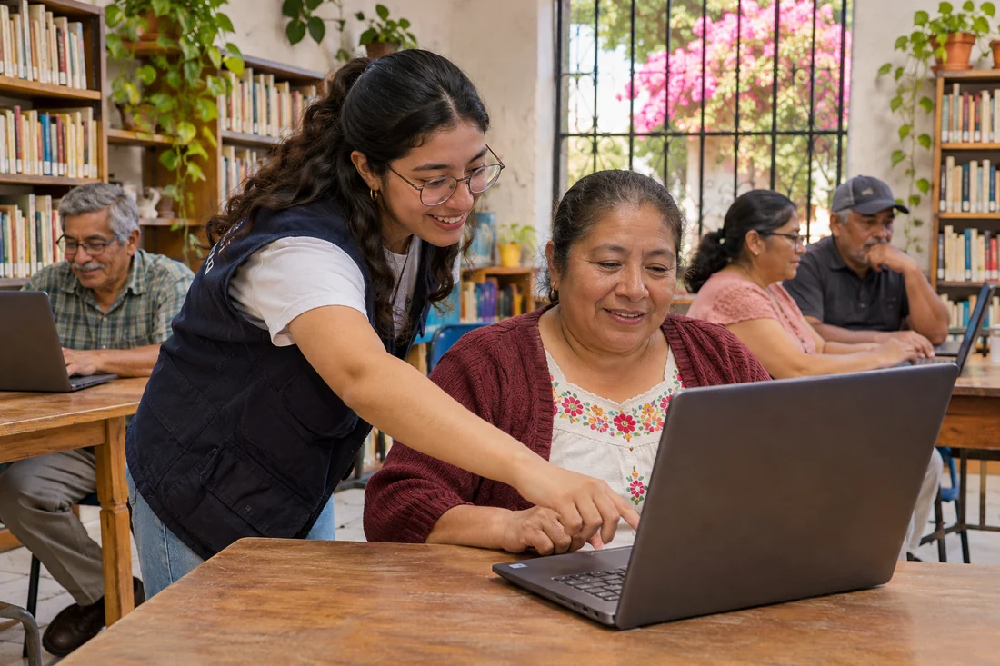

Ideas centrales
Un proyecto de vida reúne aspiraciones, valores, metas y acciones en distintas áreas, como la formación, el trabajo, las relaciones y la participación en la comunidad. Una investigación con profesorado joven de Ciudad de México encontró que sus aspiraciones se habían formado en relación con su trayectoria y su contexto social. Considerar el contexto ayuda a reconocer qué apoyos tenemos, qué barreras enfrentamos y cuáles podemos transformar (García Villanueva et al., 2024).
El propósito da una razón duradera para sostener las metas. Damon et al. (2003) lo entienden como una intención con significado para la persona y consecuencias que alcanzan a otros. Por ejemplo, terminar una carrera es una meta, mientras que contribuir a que más personas accedan a servicios esenciales puede dar sentido a esa formación. El criterio ético aparece al preguntarnos a quién sirven nuestros objetivos y qué medios estamos dispuestos a usar para alcanzarlos.
El curso vincula el proyecto personal con dos preguntas éticas. Desde Kant, podemos preguntarnos si el principio que guía una decisión podría valer para cualquiera y si actuamos por deber. Desde Hans Jonas, podemos considerar si las consecuencias de nuestras decisiones ayudan a preservar las condiciones de vida para el futuro. Ambas preguntas permiten examinar la huella de un proyecto personal (Universidad Tecmilenio, 2023c).
El proyecto se fortalece al probar acciones concretas y revisar sus resultados. En entrevistas con jóvenes, Malin et al. (2014) observaron procesos como explorar posibles roles, replantear prioridades en las transiciones y encontrar caminos para sostener un propósito. Para llevarlo a la práctica, elige un valor, formula una meta con plazo, identifica un primer paso y fija una fecha para revisar avances. Cuando cambian las circunstancias, una meta puede ajustarse y seguir respondiendo al mismo propósito.
Ejemplo de aplicación
Sofía estudia informática y quiere ampliar el acceso a la tecnología. Le ofrecen participar en un proyecto que exige recopilar datos de menores sin informar adecuadamente a sus familias. Decide pedir que el equipo obtenga consentimiento y limite los datos recogidos. Si el equipo mantiene el requisito, buscará una práctica donde pueda aprender y respetar la privacidad. Para explorar su propósito, acuerda con la biblioteca de su colonia preparar un taller gratuito de habilidades digitales en seis semanas. Después del taller revisará la asistencia y lo que aprendieron las personas participantes antes de decidir su siguiente paso.
Por qué elegí este subtema
Elegí proyecto de vida porque permite comprobar si mis decisiones a corto plazo son coherentes con los compromisos que quiero sostener. Para aplicar esta idea en la vida personal y profesional, puedo evaluar una oportunidad por lo que permite aprender, por cómo se obtiene ese aprendizaje y por cómo afecta a otras personas. Un lector puede utilizarlo al elegir prácticas, organizar su tiempo o reconsiderar una meta frente a un cambio.
Galería del subtema

